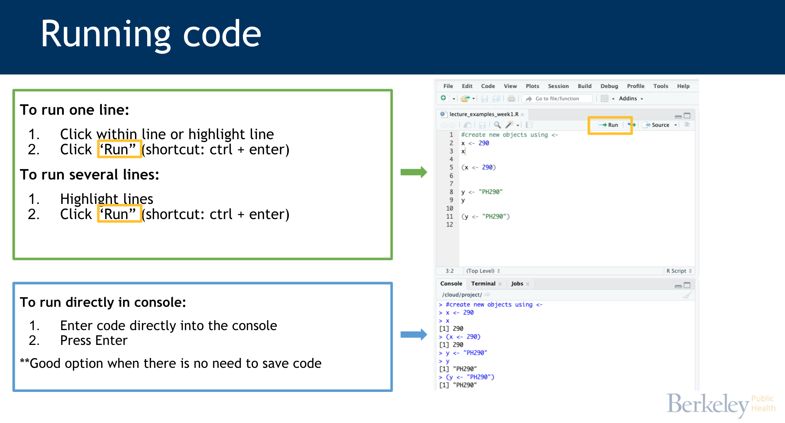
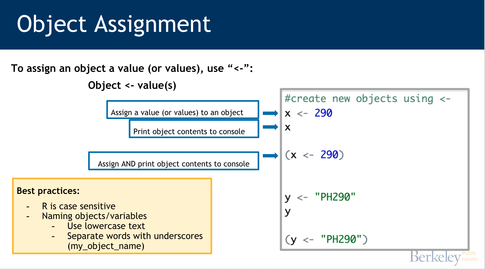
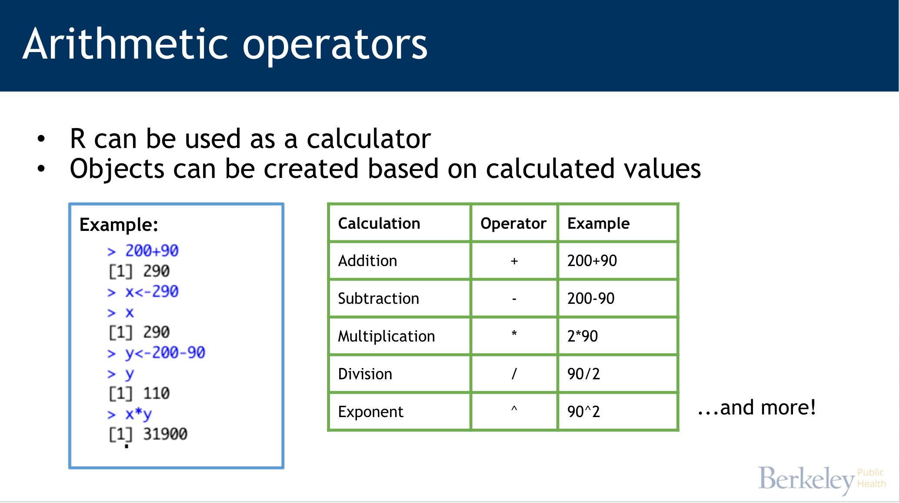
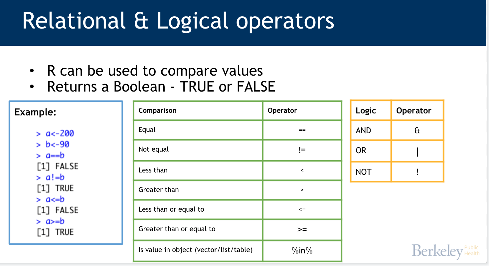
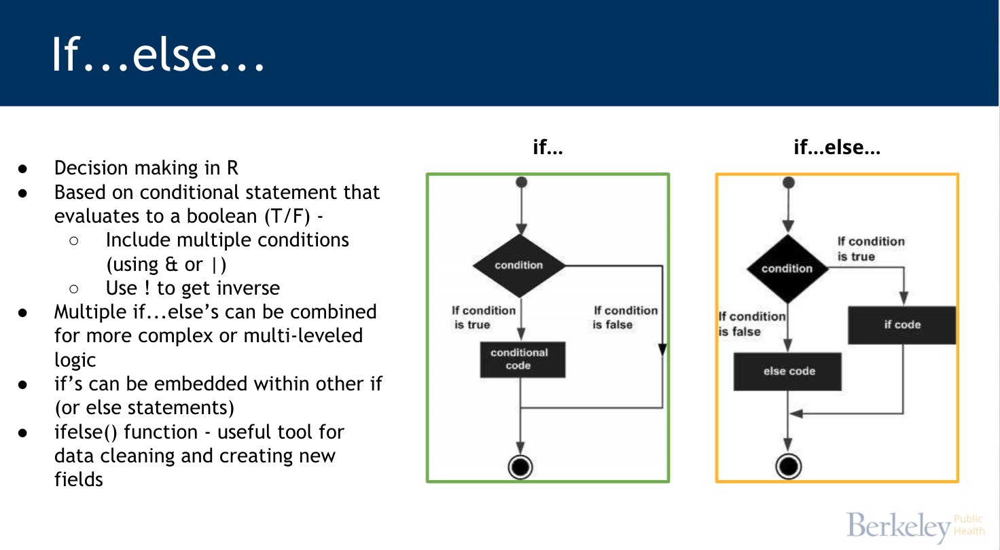
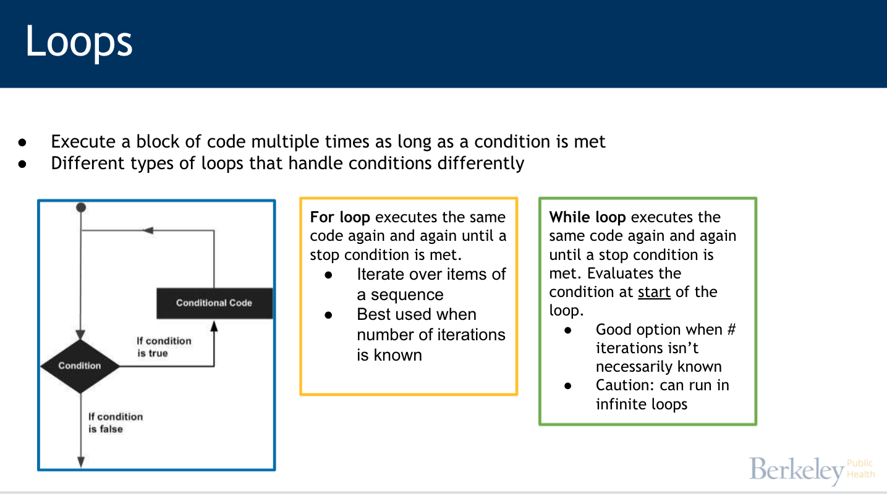
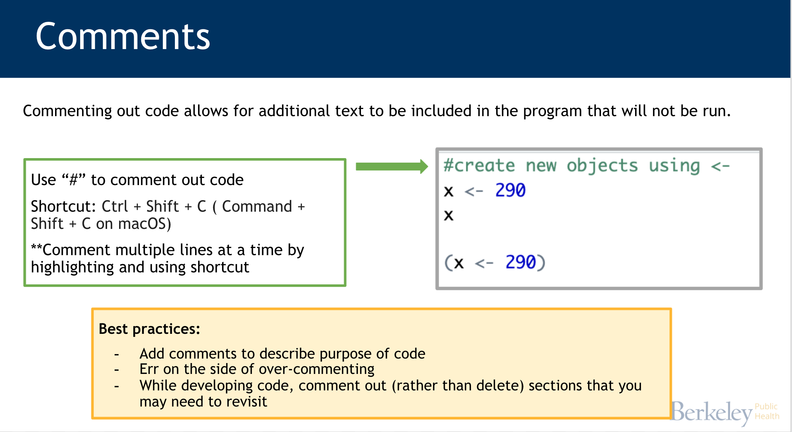

2 + 3[1] 52 + 2[1] 4
2 + 3[1] 52 + 2[1] 4
x <- 500
x[1] 500(y<-39+23)[1] 62current_month <- "August"
a <- 200
b <- 90
a/b[1] 2.222222b^2[1] 8100new_calc <- a * b
a <- 2
b <- 7
x <- 1000
y <- 999
a==b[1] FALSEx==y[1] FALSEx<y[1] FALSEa<b[1] TRUEx<y & a<b[1] FALSEx<y | a<b[1] TRUEc <- "hi"
d <- "hello"
c == d[1] FALSE#using %in%
v <- c("Monday","Tuesday","Wednesday")
"Friday" %in% v[1] FALSEcondition_met <- "Friday" %in% v
##if code structure
# if(condition){
# if code
# }
##ifelse code structure
# if(condition){
# if code
# } else if(condition){
# else code
# } else{
# else code
# }
day <- "Friday"
if(day=="Sunday"){
print("Run weekly report")
} else if(day %in% v){
print("Run SHORT daily report")
} else{
print("Run FULL daily report")
}[1] "Run FULL daily report"#numeric
case_rate <- 45
risk <- "low"
if(case_rate>50){
risk <- "high"
} else if(case_rate>25){
risk <- "medium"
} else{
risk <- "low"
}
#ifelse(condition, if TRUE, if FALSE)
case_rate_gp <- ifelse(case_rate>50,"high","low")Examples of practical applications: + Specifying a chunk of code that should only be run on a certain day (e.g. perhaps you want a weekly summary produced every Friday) + Creating new columns based on conditions (using ifelse() function)

#for
#example
v <- LETTERS[1:4]
for ( i in v) {
print(i)
}[1] "A"
[1] "B"
[1] "C"
[1] "D"#example
county <- c("Alameda","Contra Costa","Sacramento")
case_rate <- c(54,23,46)
for (i in 1:length(county)){
print(paste0(county[i]," case rate: ",case_rate[i]))
}[1] "Alameda case rate: 54"
[1] "Contra Costa case rate: 23"
[1] "Sacramento case rate: 46"#while
count <- 1
while (count < 7) {
print(paste0("Hello, this is round ",count))
count <- count + 1
}[1] "Hello, this is round 1"
[1] "Hello, this is round 2"
[1] "Hello, this is round 3"
[1] "Hello, this is round 4"
[1] "Hello, this is round 5"
[1] "Hello, this is round 6"#how they differ
counter <- 1
while(counter <= 10) {
print(counter)
counter <- counter + 1
}[1] 1
[1] 2
[1] 3
[1] 4
[1] 5
[1] 6
[1] 7
[1] 8
[1] 9
[1] 10# this for loop provides the same output
counter <- vector(mode = "numeric", length = 10)
for(i in 1:length(counter)) {
print(i)
}[1] 1
[1] 2
[1] 3
[1] 4
[1] 5
[1] 6
[1] 7
[1] 8
[1] 9
[1] 10for(i in 1:10) {
print(i)
}[1] 1
[1] 2
[1] 3
[1] 4
[1] 5
[1] 6
[1] 7
[1] 8
[1] 9
[1] 10Examples of practical applications:
Generating a value or report for each county in CA
Read in multiple files
Simulations
Comments
